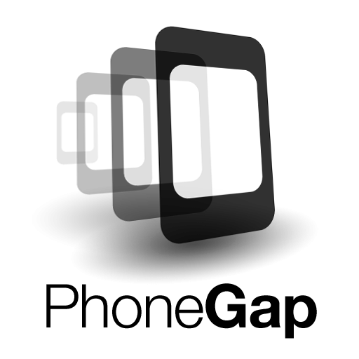
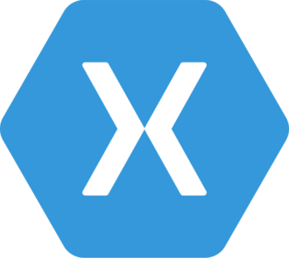

El origen de HTML se remonta a 1980, cuando el físico Tim Berners-Lee, trabajador del CERN (Organización Europea para la Investigación Nuclear) propuso un nuevo sistema de "hipertexto" para compartir documentos. Mas adelante lo depuraría y finalizaría para comenzar un sistema de hipertexto para internet, actualmente es el lenguaje que se utiliza para estructurar y desplegar una página web y sus contenidos, y se encuentra en su quinta versión.

Brendan Eich escribió la primera versión de el lenguaje de programación JavaScript en tan solo diez días de mayo de 1995, se introdujo como una forma de agregar programas a páginas web en el navegador Netscape Navigator. En su momento fue una idea novedosa, y se podría decir que surgió por la necesidad de ampliar las posibilidades del HTML, ya que este provee de elementos que actúan exclusivamente sobre el texto.

El CSS (Cascading Style Sheets), en español Hojas de Estilo en Cascada, fue desarrollado por W3C en 1996, este lenguaje de diseño gráfico se escribe dentro del código HTML del sitio web, y permite crear páginas de una manera más exacta y aplicarles estilos (colores, márgenes, formas, tipos de letras, etc.) por lo que se tiene mayor control de los resultados finales.

iOS es un sistema operativo móvil creado por la empresa Apple Inc, originalmente desarrollado para el iPhone, aunque actualmente se utilice en dispositivos como el iPod y el iPad. Su fecha de lanzamiento fue el 29 de junio de 2007, y actualmente es uno de los sistemas operativos mas populares para móviles junto con android.

Es un framework para el desarrollo de aplicaciones móviles producido por Nitobi, y comprado posteriormente por Adobe Systems, su lanzamiento oficial fue el 07 de agosto de 2008, principalmente, PhoneGap permite a los programadores desarrollar aplicaciones para dispositivos móviles utilizando herramientas genéricas tales como JavaScript, HTML5 y CSS3, resultando en aplicaciones híbridas.
Android es, junto a iOS, la plataforma más popular en lo que a telefonía inteligente se refiere, ya que el sistema operativo Android es de código abierto, y por eso es la opción más utilizada por los fabricantes de telefonía móvil, este fue desarrollado por Android inc respaldado por google hasta el día de su lanzamiento 2008, su sistema se basa en la estructura de GNU LINUX.
Sucesor de Windows Mobile, desarrollado por Microsoft y basado en el núcleo Windows Embedded CE 6.0, fue lanzado el 15 de febrero de 2010 como un sistema operativo móvil aunque actualmente esta descontinuado.
Es un compañia de software creada por Miguel de Icaza, y Nat Friedman en 2011, que permite desarrollar en C# con una biblioteca de clases y un runtime que funciona en muchas plataformas, como iOS, Android y Windows. Además, permite compilar aplicaciones nativas (no interpretadas) que tienen un rendimiento bastante bueno.
Apache Cordova, desarrollado por Apache Software Foundation en 2011, es una versión de código abierto de PhoneGap que sirve de framework de desarrollo móvil de código abierto. Permite utilizar las tecnologías estándar web como HTML5, CSS3 y JavaScript para desarrollo multiplataforma.
Framework creado en 2013 por Max Lynch, Ben Sperry y Adam Bradley de Drifty Co que sirve como una herramienta gratuita y open source, para el desarrollo de aplicaciones híbridas basadas en HTML5, CSS y JS. Está construido con Sass y optimizado con AngularJS. Hasta la llegada de React Native ha sido una de las tecnologías líderes para el desarrollo de aplicaciones móviles híbridas.

Es una biblioteca Javascript de código abierto diseñada para crear interfaces de usuario, con el objetivo de facilitar el desarrollo de aplicaciones en una sola página, su autor es Jordan Walke y su lanzamiento oficial fue el 29 de mayo de 2013, esta biblioteca es manteniada por facebook y la comunidad de software libre.
Es un lenguaje de programación creado por Apple, Inc lanzado en 2014, enfocado en el desarrollo de aplicaciones para iOS y macOS, está diseñado para integrarse con los Frameworks Cocoa y Cocoa Touch, además puede usar cualquier biblioteca programada en Objective-C y llamar a funciones de C.

Creado por Jordan Walke, Facebook y comunidad 2015, React Native es un framework JavaScript para crear aplicaciones reales nativas para iOS y Android, basado en la librearía de JavaScript React para la creación de componentes visuales, cambiando el propósito de los mismos para, en lugar de ser ejecutados en navegador, correr directamente sobre las plataformas móviles nativas lo que se obtiene al final como resultado, es una aplicación real nativa

Angular es un framework para aplicaciones web desarrollado en TypeScript, de código abierto, mantenido por Google, su autor es Miško Hevery y su lanzamiento fue el 15 de septiembre de 2016. Su objetivo principal es desarrollar aplicaciones de una sola página y consta de un grupo diverso de más de 1,7 millones de desarrolladores, autores de bibliotecas y creadores de contenido.

Flutter es un SDK de código fuente abierto de desarrollo de aplicaciones móviles creado por Google. Suele usarse para desarrollar interfaces de usuario para aplicaciones en Android, iOS y Web, así como método primario para crear aplicaciones para Google Fuchsia. Actualmente es uno de los proyectos de desarrollo de aplicaciones móviles que más está creciendo. Además, desde la última versión estable, también es posible realizar aplicaciones Web y de escritorio para Windows y Mac. Aunque en estas dos plataformas aún está en fase experimental (beta).